Spotify Data Pipeline with Airflow - What am I listening to?
In this project, we create a data Pipeline to extract data from spotify via API, upload the data into AWS using a EC2 instance inside a S3 Bucket, orchestrated by Airflow.
Workflow / Tech Stack

I created this playlist to use as our datasource.

Create a EC2 instance in AWS
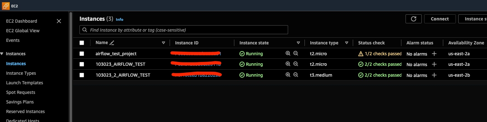Create a S3 bucket to store the data as csv files
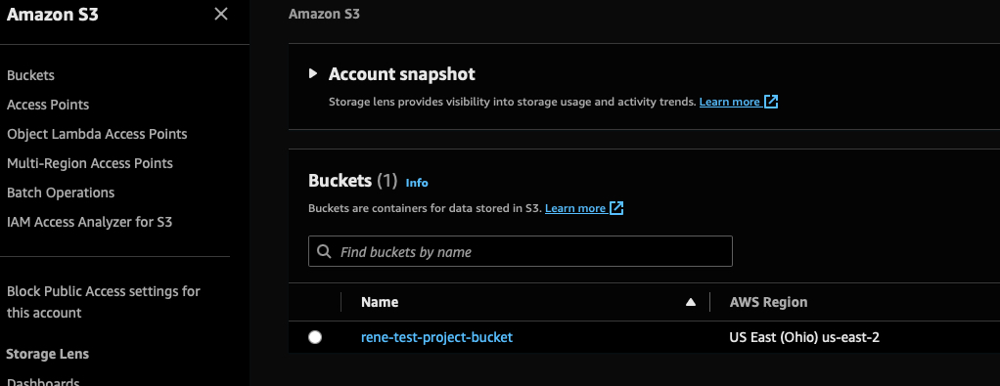Setting up directory for airflow
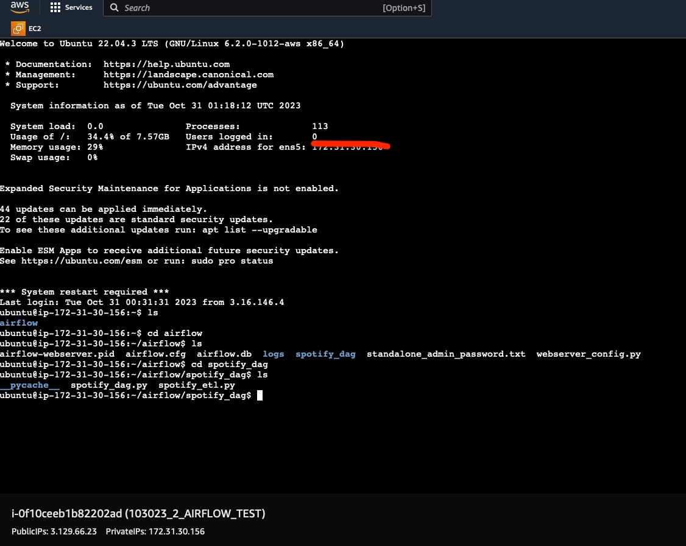settting up are environment to run our scripts, installing libraries
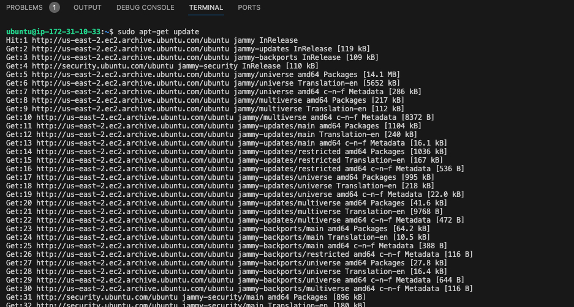 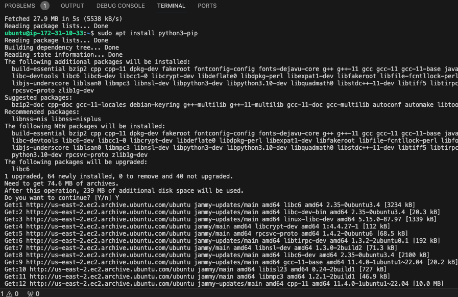 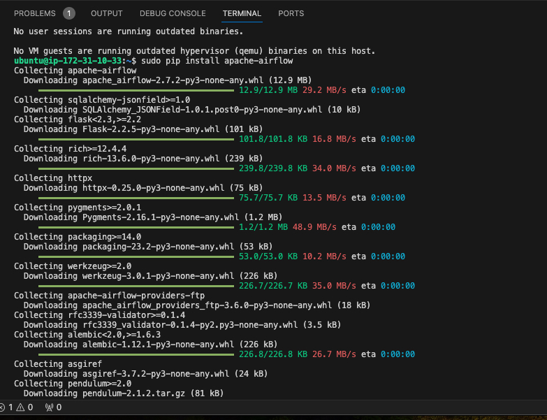Creating our python script to scrap data from spotify via api and write data as csv
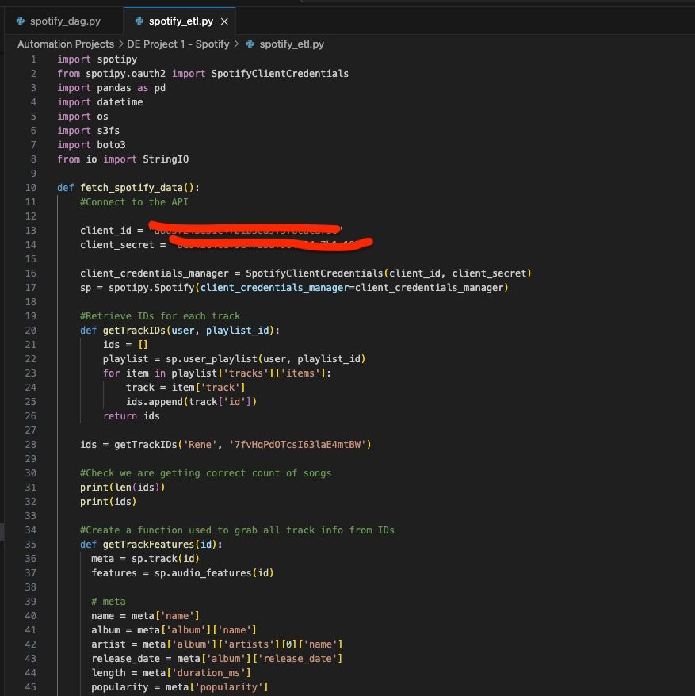Create the dag

Connect to our EC2 instance via SSH Client
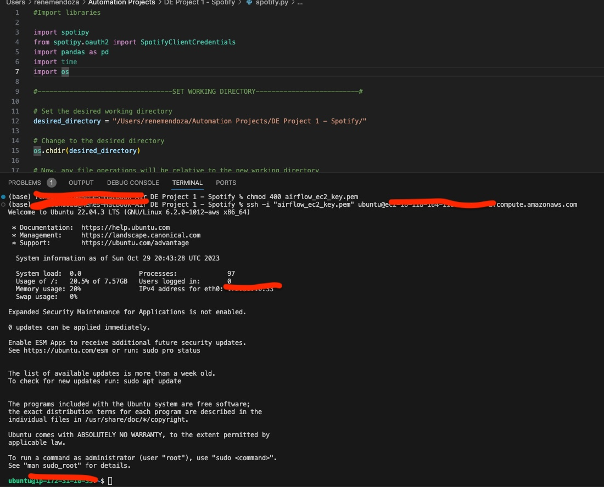Run Airflow

Run Airflow web server
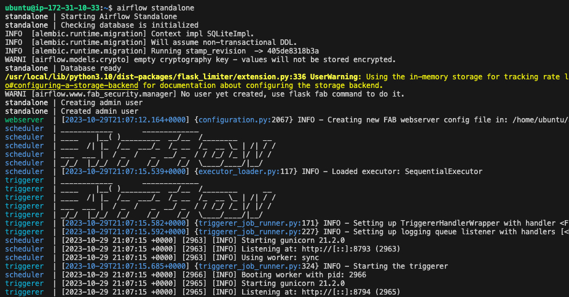Airflow is ready
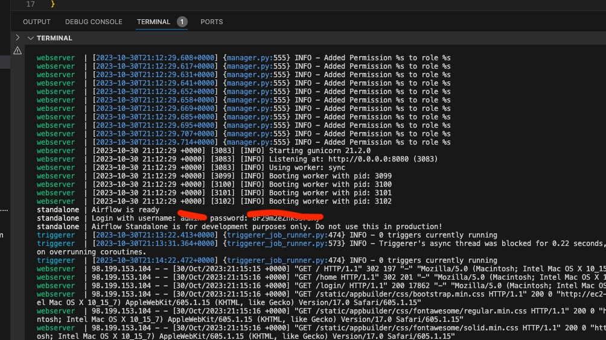Dag loaded to Airflow
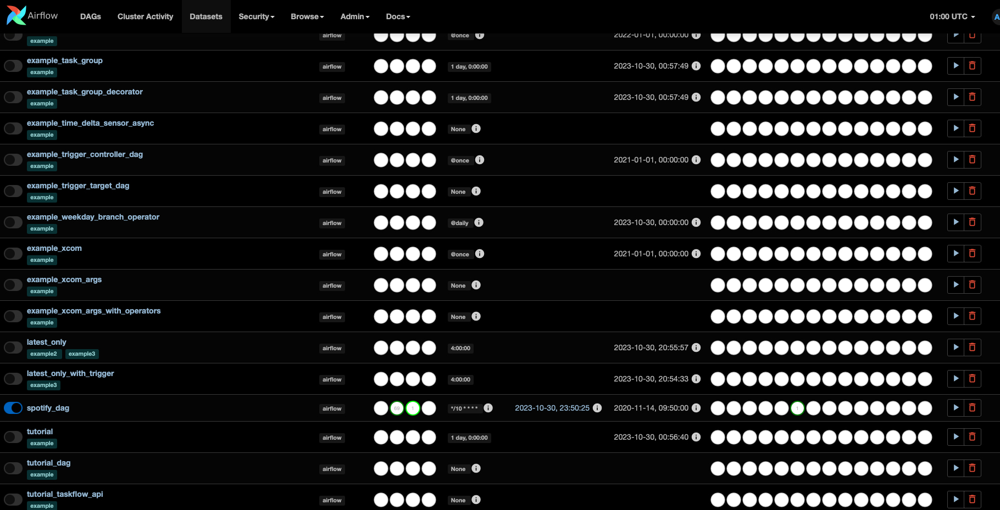Dag runs
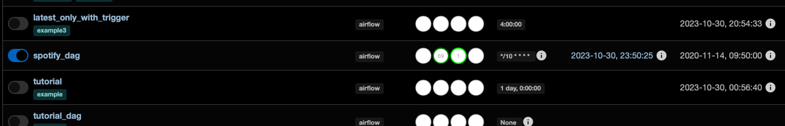Pause the dag
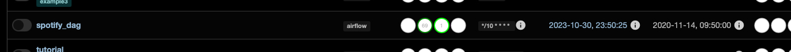Dag grid stats
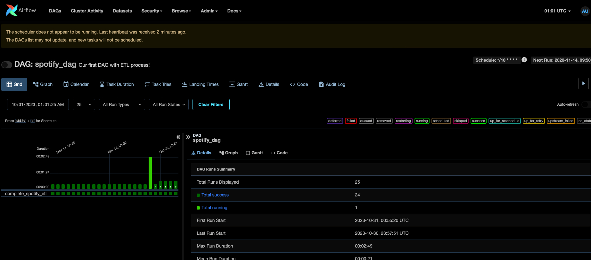Dag logs
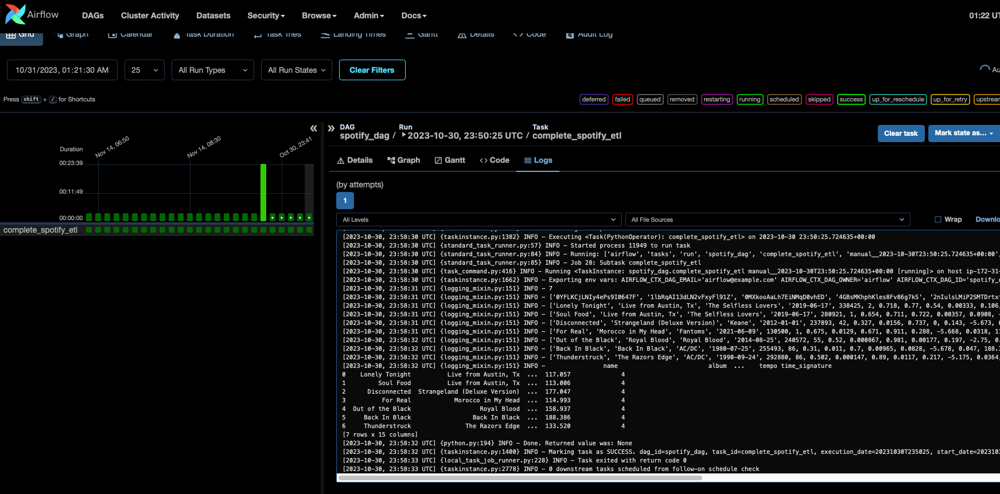Dag code
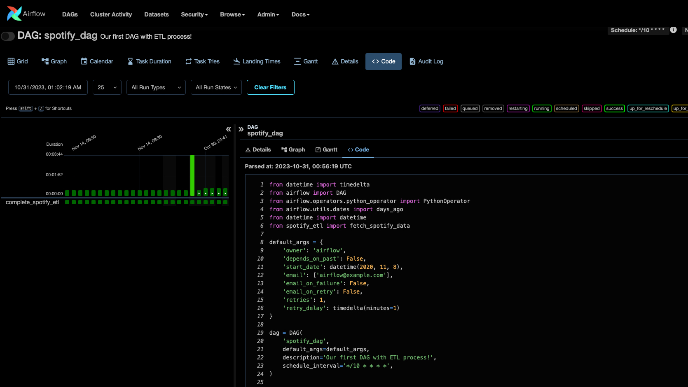Ouput from dag saved to S3 as CSV
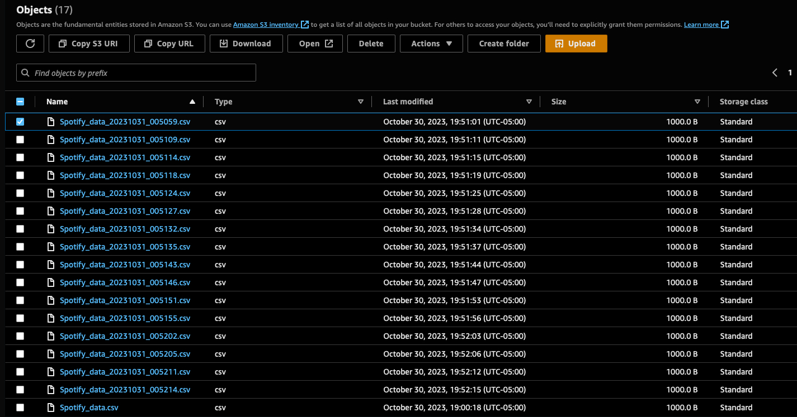Data
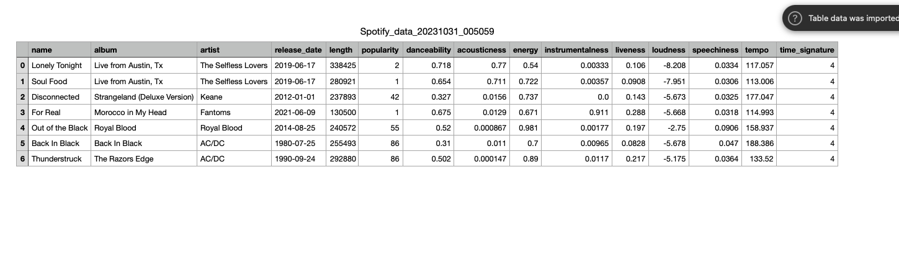As I like more songs, the data Pipeline is setup to extract the new data/songs as I add music to my playlist.
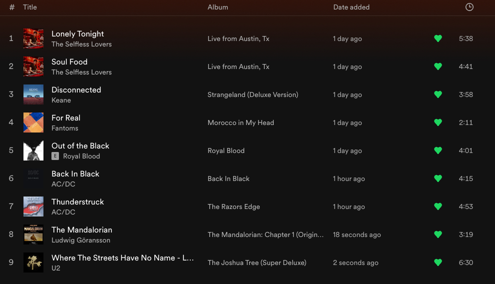Ouput from dag saved to S3 as CSV
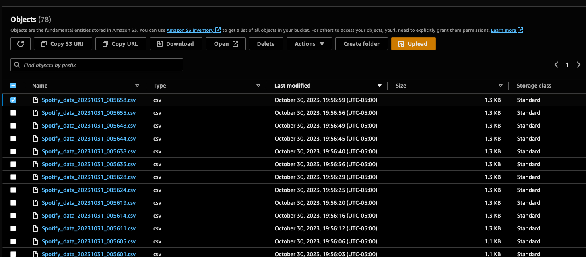Updated Data
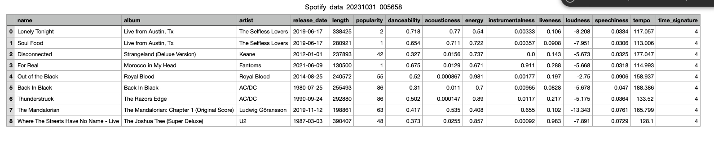In theory, as I listen to new music and add new songs to this playlist, the ETL would account for it, and the new csv files created would contain the new records in real time.
However, since using AWS resources is not free, this is ETL was only live to demonstrate the process. It is not active anymore.